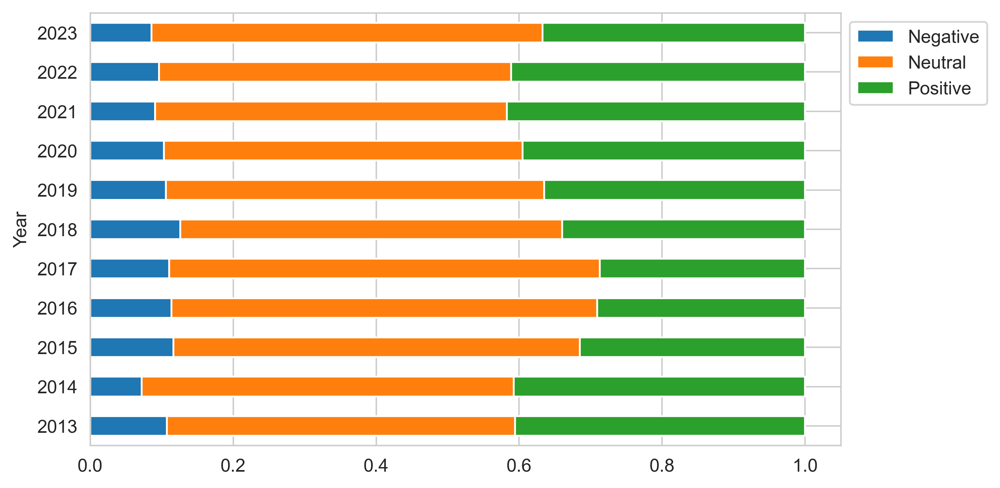
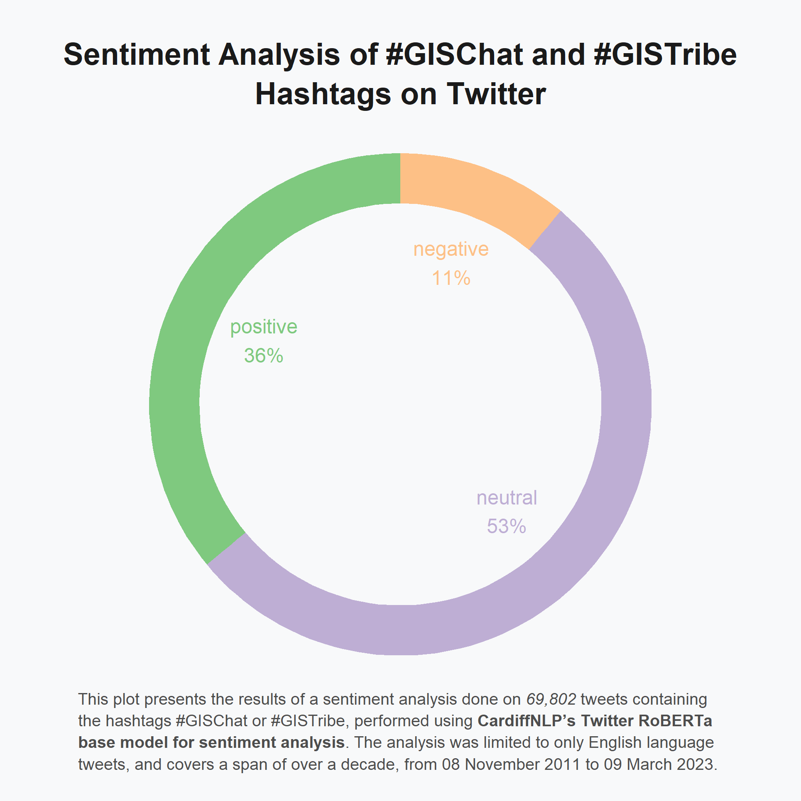
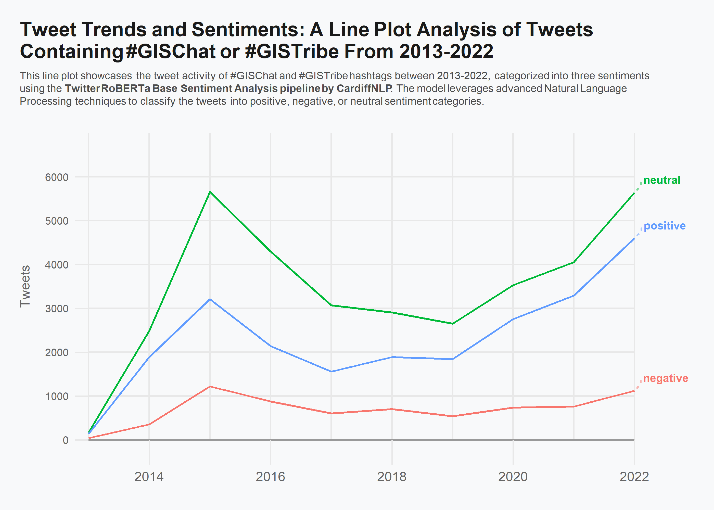

Sentiment Analysis of Tweets Containing #GISChat or #GISTribe From 2011 Till 2023
This project aimed to evaluate the sentiment of tweets containing the #GISChat or #GISTribe hashtags by utilising a sentiment analysis pipeline after scraping the tweets by making use of the snscrape python library.
Data Collection and Pre-Processing:
The initial step was to collect data from twitter using the snscrape python library. A total of 74,146 tweets were scraped that contained the hashtags #GISChat or #GISTribe, spanning from 08 November 2011 till 09 March 2023. The collected data was then filtered to exclude non-English language tweets, and the remaining tweets were pre-processed. This involved removing any URLs, mentions, and special characters. The pre-processing step ensured that the sentiment analysis was done on only the relevant text.
Sentiment Analysis:
The pre-processed data was then subjected to sentiment analysis using the Twitter RoBERTa Base sentiment analysis model developed by CardiffNLP. The model classified the 69,802 tweets into positive, negative, and neutral sentiments. 53% of the total tweets were neutral, 36% were positive, and only 11% were negative. This anslysis provided insights into the overall sentiment of the GIS community on Twitter. The results were visualised using various charts - a bar chart was used to show the distribution of positive, negative, and neutral tweets for each year, a doughnut pie chart was used to show the overall percentage distribution of the sentiments, and a line plot was used to show the trend of sentiment over time.
Scraping, Data Processing, And Sentiment Analysis With Python
Python Libraries Setup
```{python}
# Import necessary libraries
from transformers import pipeline
from tqdm import tqdm
import pandas as pd
import numpy as np
import snscrape.modules.twitter as sntwitter
import matplotlib.pyplot as plt
import re
```Tweet Scraping
```{python}
# Defining the function to scrape tweets utilising snscrape
def twt_scraper(query, n_tweet):
# Empty list to store the tweets
content = []
# Maximum number of tweets
max_tweet = n_tweet
# Loop till it scrapes every tweet or reaches limit, tqdm for progress bar
for i, tweet in tqdm(enumerate(sntwitter.TwitterSearchScraper(query) \
.get_items()), total=max_tweet):
if i>max_tweet:
break
content.append([
tweet.user.username,
tweet.lang,
tweet.date,
tweet.sourceLabel,
tweet.likeCount,
tweet.retweetCount,
tweet.rawContent,
tweet.hashtags
])
# Create a pandas dataframe with the scraped tweets
return pd.DataFrame(content, columns=[
'Username',
'Language',
'Date',
'Source',
'Likes',
'Retweets',
'Tweet',
'Hashtags'
])
``````{python}
#| eval: false
# Running the scrape function
twt = twt_scraper('(#gischat OR #gistribe)', 200000)
# Saving the dataframe as a parquet file for interoperability between python and R
twt.to_parquet('twt.parquet')
```Pre-Processing Tweets
```{python}
#| eval: false
# Creating a function for cleaning the tweets
def pre_process(text):
# Remove links
text = re.sub('http://\S+|https://\S+', '', text)
text = re.sub('http[s]?://\S+', '', text)
text = re.sub(r'http\S+', '', text)
# Convert HTML references
text = re.sub('&', 'and', text)
text = re.sub('<', '<', text)
text = re.sub('>', '>', text)
text = re.sub('\xa0', ' ', text)
# Remove new line characters
text = re.sub('[\r\n]+', ' ', text)
# Remove mentions
text = re.sub(r'@\w+', '', text)
# Remove hashtags
text = re.sub(r'#\w+', '', text)
# Remove multiple space characters
text = re.sub('\s+', ' ', text)
# Convert to lowercase
text = text.lower()
return text
``````{python}
#| eval: false
# Cleaning the tweets
twt['Processed_Tweet'] = twt['Tweet'].apply(pre_process)
# Filtering out the scraped tweets to keep only english tweets
twt = twt.query("Language == 'en'")
twt.reset_index(drop=True, inplace=True)
# Making a seperate year column
twt['Year'] = pd.DatetimeIndex(twt['Date']).year
twt['Year'] = twt['Year'].astype('int64')
```Sentiment Analysis
```{python}
#| eval: false
# Define a pipeline for sentiment analysis using the cardiffnlp twitter roberta base model
sentiment_analysis = pipeline(
"sentiment-analysis",
model="cardiffnlp/twitter-roberta-base-sentiment-latest",
tokenizer="cardiffnlp/twitter-roberta-base-sentiment-latest",
device=0
)
# Testing the model
data = ["I love you", "I hate you"]
sentiment_analysis(data)
``````{python}
#| eval: false
# Empty list to save store the sentiments
Sentiments = []
# Loop over each processed tweet, tqdm for progress bar
for Processed_Tweet in tqdm(twt['Processed_Tweet']):
Sentiment = sentiment_analysis(Processed_Tweet)
Sentiments.append(Sentiment[0])
# concatenating the original df with the sentiments
twt_sent = pd.concat([twt, pd.DataFrame(Sentiments)], axis=1).copy()
# storing it as a parquet file for interoperability
twt_sent.to_parquet('twt_sent.parquet')
```Basic Visualisation
```{python}
#| eval: false
# Visualising to see what the results look like
twtsent = pd.read_parquet("twt_sent.parquet")
# Removing 2011 and 2012 as there isn't sufficient data
twt_1323 = twtsent.query('Year > 2012', engine='python').reset_index(drop=True).copy()
# Grouping by year and label to plot the bar chart
twt_1323.groupby('Year')['label'].value_counts(normalize=True).unstack().plot(
kind='barh', stacked=True, figsize=(7.4,4.3)
)
plt.legend(["Negative", "Neutral", "Positive"], bbox_to_anchor=(1, 1))
plt.savefig("barh.png", dpi=400, bbox_inches='tight')
```
Data Visualisation With R
R Libraries Setup
```{r}
#| warning: false
# Import necessary libraries
library(tidyverse)
library(arrow)
library(ggrepel)
library(ggtext)
theme_set(theme_minimal(base_family = "Avenir Next Condensed"))
set.seed(6)
``````{r}
# Reading the parquet file saved from the pandas df
twt_sent <- read_parquet("twt_sent.parquet")
```Doughnut Pie Chart
```{r}
# Tidying up the data
pie <- twt_sent %>%
# Duplicate tweets filtered
distinct(Processed_Tweet, .keep_all = TRUE) %>%
select(label) %>%
group_by(label) %>%
# Summarising n sentiments
summarise(count = n()) %>%
# Obtaining perc for pie plot
mutate(
perc = count/sum(count) * 100,
perc = round(perc, 0),
ymax = cumsum(perc),
ymin = ifelse(is.na(lag(ymax)), 0, lag(ymax)),
labelPosition = (ymax + ymin) / 2,
label_pie = paste0(label, "\n", perc, "%"))
# Plotting the doughnut pie chart
pieplot <- ggplot(pie, aes(ymax=ymax, ymin=ymin, xmax=4, xmin=3, fill=label)) +
geom_rect() +
geom_text( x=2, aes(y=labelPosition, label=label_pie, color=label), size=3.5) +
scale_fill_brewer(palette="Accent", direction = -1) +
scale_color_brewer(palette="Accent", direction = -1) +
coord_polar(theta="y") +
xlim(c(-1, 4)) +
theme_void() +
theme(
legend.position = "none",
plot.background = element_rect(fill = "#f8f9fa", color = "#f8f9fa"),
panel.background = element_rect(fill = "#f8f9fa", color = "#f8f9fa"),
plot.margin = margin(1, 1, 1, 1),
plot.title.position = "plot",
plot.title = element_markdown(
color = "grey10",
size = 15,
face = "bold",
margin = margin(t = 20, b = -10),
lineheight = 1.3,
hjust = 0.5
),
plot.caption = element_markdown(
color = "grey30",
size = 8,
lineheight = 1.35,
margin = margin(t = -13, b = 13, r = 1, l = -4),
hjust = 0
)
) +
labs(
title = "Sentiment Analysis of #GISChat and #GISTribe<br>Hashtags on Twitter",
caption = "This plot presents the results of a sentiment analysis done on <i>69,802</i> tweets containing<br>the hashtags #GISChat or #GISTribe, performed using <b>CardiffNLP's Twitter RoBERTa<br>base model for sentiment analysis</b>. The analysis was limited to only English language<br>tweets, and covers a span of over a decade, from 08 November 2011 to 09 March 2023."
)
# ggsave("doughnut.png", dpi = 350, height = 140, width = 140, units = "mm")
```
```{r out.width="100%"}
#| warning: false
# Tidying up the data for the line plot
line_distinct <- twt_sent %>%
# Filtering duplicate tweets
distinct(Processed_Tweet, .keep_all = TRUE) %>%
select(Year, label) %>%
# Grouping and summarising by year and label to obtain different lines
group_by(Year, label) %>%
summarise(n = n()) %>%
pivot_wider(
names_from = label,
values_from = n
) %>%
filter(Year > 2012 & Year < 2023) %>%
# Gather the data so that each sentiment label is in a single column
gather(key = "labels", value = "Tweets", -Year) %>%
group_by(Year) %>%
# Adding a new column for the line label that has the sentiment for the last year and NA for the rest
mutate(
name_label = if_else(Year == 2022, labels, NA_character_)
) %>%
ungroup()
# Plotting the Line Chart
# Visualisation based on Cedric Scherer's design (https://github.com/z3tt/TidyTuesday/blob/main/R/2020_52_BigMacIndex.Rmd)
lineplot_distinct <-
ggplot(line_distinct, aes(x = Year, y = Tweets)) +
geom_vline(
xintercept = seq(2013, 2022, by = 1),
color = "grey91",
size = .6
) +
geom_segment(
data = tibble(y = seq(0, 6000, by = 1000), x1 = 2013, x2 = 2022),
aes(x = x1, xend = x2, y = y, yend = y),
inherit.aes = FALSE,
color = "grey91",
size = .6
) +
geom_segment(
data = tibble(y = 0, x1 = 2013, x2 = 2022),
aes(x = x1, xend = x2, y = y, yend = y),
inherit.aes = FALSE,
color = "grey60",
size = .8
) +
geom_line(aes(color = labels), size = .7) +
theme(
panel.grid = element_blank(),
axis.title.x = element_blank(),
axis.title.y = element_text(color = "grey40", size = 10, margin = margin(r = 10)),
axis.text = element_text(color = "grey40"),
axis.text.x = element_text(size = 10, margin = margin(t = 5)),
axis.text.y = element_text(size = 8, margin = margin(r = 5)),
axis.ticks = element_line(color = "grey91", size = .5),
axis.ticks.length.x = unit(1.3, "lines"),
axis.ticks.length.y = unit(.7, "lines"),
plot.margin = margin(15, 60, 20, 15),
plot.background = element_rect(fill = "#f8f9fa", color = "#f8f9fa"),
panel.background = element_rect(fill = "#f8f9fa", color = "#f8f9fa"),
plot.title = element_markdown(
color = "grey10",
size = 15,
face = "bold",
margin = margin(t = 1),
lineheight = 1.1
),
plot.subtitle = element_markdown(
color = "grey30",
size = 8,
lineheight = 1.2,
margin = margin(t = 7, b = 20)
),
plot.title.position = "plot",
plot.caption.position = "plot",
plot.caption = element_text(
color = "grey30",
size = 13,
lineheight = 1,
hjust = 0,
margin = margin(t = 40)
),
legend.position = "none"
) +
coord_cartesian(
clip = "off",
ylim = c(0, 7000)
) +
scale_x_continuous(
expand = c(0, 0),
limits = c(2013, 2022),
breaks = seq(2014, 2022, by = 2)
) +
scale_y_continuous(
expand = c(0, 0),
breaks = seq(0, 6000, by = 1000)
) +
geom_text_repel(
aes(color = labels, label = name_label),
family = "Avenir Next Condensed",
fontface = "bold",
size = 3,
direction = "y",
xlim = c(2026, NA),
hjust = 0,
segment.size = .7,
segment.alpha = .5,
segment.linetype = "dotted",
box.padding = .4,
segment.curvature = -0.1,
segment.ncp = 3,
segment.angle = 20,
force = 3
) +
labs(
title = "Tweet Trends and Sentiments: A Line Plot Analysis of Tweets <br> Containing #GISChat or #GISTribe From 2013-2022",
subtitle = "This line plot showcases the tweet activity of #GISChat and #GISTribe hashtags between 2013-2022, categorized into three sentiments<br>using the <b>Twitter RoBERTa Base Sentiment Analysis pipeline by CardiffNLP</b>. The model leverages advanced Natural Language<br>Processing techniques to classify the tweets into positive, negative, or neutral sentiment categories."
)
# ggsave("lineplot_distinct.png", dpi = 375, width = 2800, height = 2000, units = "px")
```
Credits and Sources:
Twitter scraping: snscrape library (https://github.com/JustAnotherArchivist/snscrape)
Twitter RoBERTa Base Sentiment Analysis pipeline by CardiffNLP (https://huggingface.co/cardiffnlp/twitter-roberta-base-sentiment-latest)
Line plot visualisation based on Cedric Scherers design (https://github.com/z3tt/TidyTuesday/blob/main/R/2020_52_BigMacIndex.Rmd), and Kamils ggrepel package that makes the unique labeling possible